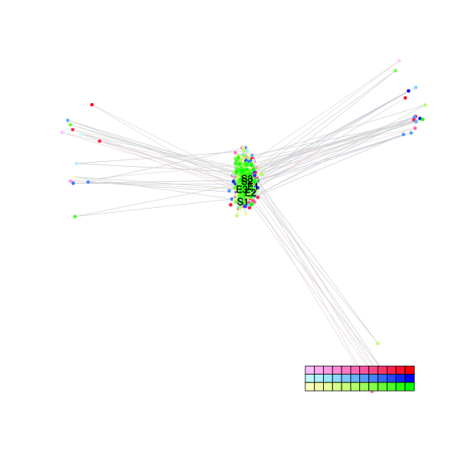
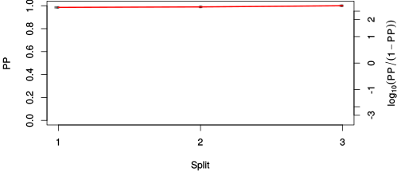
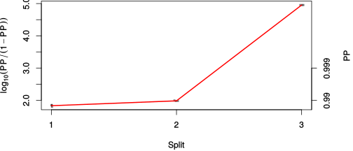

| chain # | burnin | subsample | Iterations (remaining) | command line | subdirectory | directory |
|---|---|---|---|---|---|---|
| 1 | 10000 | 1 | 90000 | /home/willemsen/software/bali-phy-3.0-beta2/bin/bali-phy E6_AA_red3_v2_PerissoArtio.fas -s 89746 -n PerissoArtio_c1 | PerissoArtio_c1-1 | /DATA/work/ONCOGENEVOL/database/trees/Bali-Phy/E6 |
| 2 | 10000 | 1 | 90000 | /home/willemsen/software/bali-phy-3.0-beta2/bin/bali-phy E6_AA_red3_v2_PerissoArtio.fas -s 49747 -n PerissoArtio_c2 | PerissoArtio_c2-1 | /DATA/work/ONCOGENEVOL/database/trees/Bali-Phy/E6 |
| 3 | 10000 | 1 | 90000 | /home/willemsen/software/bali-phy-3.0-beta2/bin/bali-phy E6_AA_red3_v2_PerissoArtio.fas -s 10923 -n PerissoArtio_c3 | PerissoArtio_c3-1 | /DATA/work/ONCOGENEVOL/database/trees/Bali-Phy/E6 |
| P(data|M) = -2138.825 +- 0.131 | Complete sample: 11 topologies | 95% Bayesian credible interval: 1 topologies |
Phylogeny Distribution

| Partition support: Summary |
| Partition support graph: SVG |
{kind=link}
| 50% consensus | Newick (+PP) | SVG | |||||
| 66% consensus | Newick (+PP) | SVG | |||||
| 80% consensus | Newick (+PP) | SVG | |||||
| 90% consensus | Newick (+PP) | SVG | |||||
| 95% consensus | Newick (+PP) | SVG | |||||
| 99% consensus | Newick (+PP) | SVG | |||||
| 100% consensus | Newick (+PP) | SVG | |||||
| MAP | Newick (+PP) | SVG | |||||
| greedy | Newick (+PP) | SVG |
{kind=link}
{kind=link}
{kind=link}
{kind=link}
{kind=link}
{kind=link}
{kind=link}
{kind=link}
Alignment Distribution
Partition 1
| Diff | Min. %identity | # Sites | Constant | Informative | ||||
|---|---|---|---|---|---|---|---|---|
| Initial | FASTA | HTML | Diff | 4.23% | 206 | 1 (0.485%) | 39 (18.9%) | |
| Best (WPD) | FASTA | HTML | AU | 14.4% | 265 | 18 (6.79%) | 47 (17.7%) |
Mixing
{kind=link}
{kind=link}
| burnin (scalar) | ESS (scalar) | ESS (partition) | ASDSF | MSDSF | PSRF-CI80% | PSRF-RCF |
|---|---|---|---|---|---|---|
| 900 | 6160 | 35220.302 | 0.000 | 0.001 | 1.001 | 1.008 |
Projection of RF distances for the first 3 chains3D | Variation of split PPs across chains |
Scalar variables
| Statistic | Median | 95% BCI | ACT | ESS | burnin | PSRF-CI80% | PSRF-RCF |
|---|---|---|---|---|---|---|---|
| prior | -186.3 | (-224.7, -155) | 41.41 | 6520 | 449 | 1 | 0.9976 |
| prior_A1 | -164.7 | (-201.1, -135.5) | 26.95 | 10019 | 404 | 1 | 0.9983 |
| likelihood | -2123 | (-2140, -2106) | 13.94 | 19370 | 243 | 1 | 0.9984 |
| logp | -2309 | (-2344, -2281) | 43.83 | 6159 | 533 | 0.9999 | 1.002 |
| Heat.beta | 1 | ||||||
| Scale1 | 3.426 | (1.456, 6.58) | 1.023 | 263943 | 106 | 0.9998 | 1 |
| S1.F.pi.A | 0.05081 | (0.03526, 0.06846) | 7.915 | 34114 | 152 | 1 | 1.005 |
| S1.F.pi.R | 0.08838 | (0.06644, 0.1123) | 7.812 | 34564 | 467 | 1 | 0.9964 |
| S1.F.pi.N | 0.03305 | (0.02029, 0.04711) | 7.941 | 33999 | 727 | 1.001 | 1.008 |
| S1.F.pi.D | 0.04798 | (0.03254, 0.06575) | 8.221 | 32841 | 286 | 0.9999 | 1.003 |
| S1.F.pi.C | 0.06538 | (0.04496, 0.08811) | 8.386 | 32197 | 356 | 0.9999 | 0.9995 |
| S1.F.pi.Q | 0.02553 | (0.01523, 0.0373) | 8.082 | 33406 | 692 | 1 | 1.006 |
| S1.F.pi.E | 0.05789 | (0.04021, 0.07744) | 9.37 | 28815 | 407 | 1 | 1.005 |
| S1.F.pi.G | 0.07661 | (0.05428, 0.101) | 8.281 | 32605 | 531 | 1.001 | 0.9962 |
| S1.F.pi.H | 0.02514 | (0.01438, 0.03791) | 7.82 | 34528 | 508 | 1 | 1.001 |
| S1.F.pi.I | 0.0356 | (0.02283, 0.05019) | 7.908 | 34141 | 374 | 1 | 1.001 |
| S1.F.pi.L | 0.09584 | (0.07261, 0.1216) | 7.88 | 34266 | 340 | 1 | 0.9959 |
| S1.F.pi.K | 0.05011 | (0.03527, 0.06699) | 7.857 | 34366 | 343 | 1 | 1.004 |
| S1.F.pi.M | 0.01598 | (0.007816, 0.02601) | 8.475 | 31858 | 689 | 0.9995 | 1.001 |
| S1.F.pi.F | 0.02873 | (0.0163, 0.04306) | 7.807 | 34586 | 322 | 0.9999 | 0.9991 |
| S1.F.pi.P | 0.05565 | (0.03689, 0.07617) | 8.552 | 31571 | 332 | 0.9999 | 0.9994 |
| S1.F.pi.S | 0.05385 | (0.03781, 0.07095) | 7.859 | 34357 | 310 | 0.9998 | 0.9991 |
| S1.F.pi.T | 0.04394 | (0.02956, 0.06002) | 7.774 | 34730 | 381 | 1 | 1.006 |
| S1.F.pi.W | 0.02816 | (0.01563, 0.04312) | 8.305 | 32511 | 900 | 0.9999 | 0.9985 |
| S1.F.pi.Y | 0.05526 | (0.03714, 0.07545) | 7.568 | 35677 | 253 | 1 | 1.006 |
| S1.F.pi.V | 0.05652 | (0.03943, 0.07529) | 8.096 | 33348 | 399 | 0.9998 | 0.9971 |
| I1.RS07.meanIndelLengthMinus1 | 7.261 | (4.085, 11.71) | 4.927 | 54796 | 177 | 0.9998 | 0.9987 |
| I1.RS07.logLambda | -4.011 | (-4.552, -3.51) | 3.966 | 68074 | 127 | 0.9999 | 0.9984 |
| |A1| | 258 | (239, 278) | 36.53 | 7391 | 330 | 0.9474 | 0.9938 |
| #indels1 | 19 | (15, 24) | 23.9 | 11298 | 193 | 0.8571 | 0.9998 |
| |indels1| | 156 | (129, 198) | 11.94 | 22613 | 182 | 0.9792 | 1 |
| #substs1 | 325 | (306, 341) | 34.67 | 7786 | 330 | 0.9265 | 0.9939 |
| Scale1*|T| | 4.216 | (3.667, 4.796) | 3.743 | 72134 | 129 | 0.9999 | 1 |
| |A| | 258 | (239, 278) | 36.53 | 7391 | 330 | 0.9474 | 0.9938 |
| #indels | 19 | (15, 24) | 23.9 | 11298 | 193 | 0.8571 | 0.9998 |
| |indels| | 156 | (129, 198) | 11.94 | 22613 | 182 | 0.9792 | 1 |
| #substs | 325 | (306, 341) | 34.67 | 7786 | 330 | 0.9265 | 0.9939 |
| |T| | 1.23 | (0.4985, 2.253) | 1 | 270003 | 102 | 0.9998 | 1 |